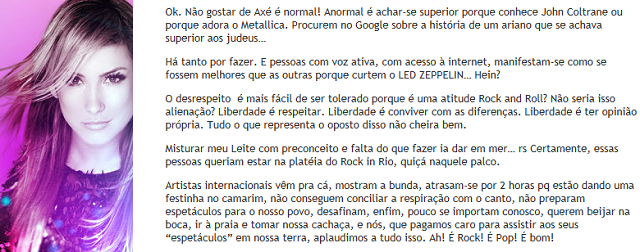

Revolucionários do Axé
A Polêmica do Axé no Rock in Rio
Todo ano de Rock in Rio é sempre a mesma coisa, tem rockista dizendo que o Rock in Rio só devia tocar rock por causa do nome. Esse argumento já foi derrubado faz tempo, mas tem gente que ainda insiste que o evento é só pra rockeiros. Se é por causa do nome, por que não exigem que o Burger King pare de vender sorvetes, batatas e refrigerantes pra vender só hambúrgueres? Já que o "burger" dele significa hambúrguer...
Por isso vou rebater os principais argumentos dos rockeiros retrógrados mais uma vez.
Rock in Rio nunca foi exclusivo do Rock
Ah, os rockeiros enchem a boca pra dizer que o Rock in Rio de 1985 só tinha bandas de rock. Não nego que existiu o Dia do Metal, com bandas como AC/DC, Queen, Iron Maiden e outras. Mas se esquecem que na primeira edição teve artistas do pop e da MPB também. Claro que o axé era novidade na época e não tinha no Rock in Rio, mas já tínhamos músicas carnavalescas trazidas por Elba Ramalho e Moraes Moreira, que tocavam frevo.
Moraes Moreira - Festa no Interior (Rock in Rio 1985)
O Caso Carlinhos Brown
Claro que na hora, um vem e falar sobre o caso do Carlinhos Brown no Rock in Rio 2001, que levou garrafadas do público rockeiro, o que mostra o quão intolerantes musicalmente o povo é. Brown hoje até lida bem com esse caso e fala numa boa em entrevistas, mas fala a verdade, havia necessidade de expulsar o cara do palco? O mais irônico é que a edição de 2001 foi uma das mais ecléticas do Rock in Rio, onde tocou até Sandy & Júnior, mas como sempre, o problema é só o axé. Até mesmo o Whiplash, um site sobre rock e metal, já falou da tamanha bobagem dos rockeiros que atiraram garrafas contra o Brown, e que isso apenas reforçaria o estereótipo de que rockeiros são agressivos. Se quiser conferir tá aqui o link: https://whiplash.net/materias/opinioes/309949-rockinrio.html
Não vou postar o vídeo do caso onde ele levou as garrafadas porque o que mais rola lá é comentário de rockistas falando mal do cara e insistindo justamente na picuinha de que "Rock in Rio deve ter só rock por causa do nome", pauta dessa matéria.
Mas digo mais: O Carlinhos Brown é um grande compositor da música brasileira, então não adianta falar mal do cara e ouvir músicas dele cantadas por Marisa Monte, Cássia Eller, Paralamas e até mesmo Sepultura. Inclusive Brown trouxe em 2016 Sepultura e Angra pro Carnaval baiano.
Carlinhos Brown, Angra e Sepultura no Carnaval de Salvador 2016
Sepultura e Carlinhos Brown - Ratamahatta
Além disso, vamos considerar que era bem melhor Carlinhos Brown do que hoje em dia, que tem até Pabllo Vittar, Anitta e outros funkeiros, né?
Mais Axé no Rock in Rio
Na edição de 2001 tocou também Daniela Mercury, e quando o Rock in Rio voltou pro Brasil em 2011, tivemos Ivete Sangalo, que marcou presença em praticamente todas as edições do evento do Rio e de Lisboa (o que prova que é só um Marca, Rock in Rio em Lisboa), e em 2011 tivemos também Claudia Leitte, que foi vaiada no show, e Claudinha falou várias verdades sobre os rockeiros no Rock in Rio, como podem ver:
Claro, os rockeiros (que odeiam ser criticados) se revoltaram e xingaram ainda mais a Claudinha nas redes sociais, mas eu concordo com tudo que ela disse, rockeiros geralmente são preconceituosos sim com outros estilos e se acham superiores por gostarem de rock, ou vão negar isso?
Com Ivete não tivemos grandes problemas no evento em si, mas sempre que chega o dia no Rock in Rio tem gente falando que "Ivete Sangalo não tem nada a ver com rock pra tocar no Rock in Rio" nas redes sociais. Chega, essa conversa já deu! Ivete é a Rainha do Rock in Rio sim mesmo tocando axé, aceitem! O rock nacional não teve tanta força depois dos anos 2000, já que muitos cantores morreram e bandas acabaram.
Além disso, o Rock in Rio desde 2011, divide em Palco Mundo (onde tocam as atrações principais), e Palco Sunset (mais voltado pra música brasileira e alternativa). Ivete toca no Palco Mundo, mas ela sempre tocou no dia Pop ou Latino, os rockeiros tem o Dia do Metal pra curtir suas bandas, justamente pra evitar problemas como o citado acima com Brown.
E digo mais, eventos como o Festival de Verão de Salvador e até mesmo micaretas e o Carnaval de Salvador, na teoria seriam do axé, mas se toca vários estilos, desde pagode, arrocha até mesmo rock e eletrônica, tudo em cima dos trios (só olhar ali em cima Angra e Sepultura junto com Brown no Carnaval). Mas nunca vi ninguém jogando garrafas no trio do Jorge & Mateus ou vaiando Dj Alok quando entrou no trio, o que prova que o povo do axé e do Carnaval é mais civilizado e respeitoso com as diferenças do que muitos rockeiros. Ah, nem mesmo o antigo Axé Brasil não era 100% axé, já que tinha sempre uma ou outra banda de pagodão no meio.
E se o problema é o nome, lembre-se do Montreux Jazz Festival, que já tocou de tudo, inclusive música brasileira e o próprio axé. Nunca vi um jazzista de mimimi com isso.
A Guitarra no Logo do Rock in Rio
O argumento mais pífio, no entanto, é dizer que Rock in Rio é só do rock por ter uma guitarra no logo, sério, eu rio com isso. Guitarra não é usada só no rock, aliás, as primeiras guitarras elétricas surgiram com músicos de blues e jazz. E axé também tem guitarra, é só lembrar de Bell Marques, Durval Lelys, Luiz Caldas, Tuca Fernandes e vários outros cantores de axé que tocam guitarra, além do próprio Carlinhos Brown. Pode até ser influência, mas o instrumento nunca foi exclusivo do rock (afinal, até forró e sertanejo usam guitarra hoje em dia).
Já que o argumentos deles é uma guitarra...
Quem Quer Rock Que Procure Outros Eventos
Afinal, se os rockeiros são mais inteligentes (como eles mesmos dizem), deveriam esquecer dessa picuinha de outros estilos no Rock in Rio e procurar outros eventos que são realmentes do rock, como por exemplo, o Monsters of Rock.
E parem com esse preconceito contra axé e outros estilos que não são rock. Se não gosta não precisa ouvir.
Só pra complementar, alguns memes sobre o assunto:


ATENÇÃO! Colocaram até sertanejo no Rock in Rio, e vocês Reclamavam do Axé
Ah, atualizando agora em 2024, colocaram até sertanejo no Rock in Rio, além de um monte de MCs de funk. Muito rockeiro deve estar espumando de raiva. Vocês reclamavam do axé, mas se for parar pra pensar, era bem melhor que o funk ou o sertanejo universitário.
No mesmo dia dedicado ao sertanejo, vai ter um show de MPB e alguns cantores do axé, como Daniela Mercury, a nossa ministra Margareth Menezes e o próprio Carlinhos Brown, que espero que seja melhor recebido dessa vez (agora vocês veem que ele era bem melhor que os sertanejos modinhas e MCs escrotos que colocaram lá).
E claro, fiz mais dois memes sobre isso, confiram abaixo: